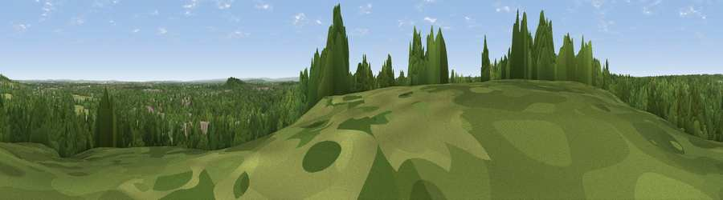

Viewpoint near Stroude
#40085 in England · top 31% of its area beats it · near Stroude · path 121 mWhere it is
The exact computed spot (SU 99925 68925). Click the marker for map links.
Public access: the nearest public right of way is about 121 m away — the final stretch may cross private land. Computed from Natural England's CRoW access layer and OpenStreetMap rights of way — not the legal definitive map. Always verify locally.
The view, rendered

A 360° render of this exact spot computed from the terrain model, tree cover and land cover — summer colours, afternoon light, calibrated against photographs of famous viewpoints. Real trees, hedges and buildings will differ in detail.
The panorama
Grey silhouette: terrain skyline in each direction (720 bearings, Earth curvature and refraction included). Dashed green: skyline with trees (+15 m) and buildings (+8 m) as obstacles. Blue strip: how far the ground is visible on each bearing.
Where the view opens
Wedge length = distance to the farthest visible ground on that bearing (vegetation-aware). Rings at 10, 25 and 50 km.
What fills the view
60% woodland · 29% grassland · 9% built-up · 1% water ·
Angular shares of the visible panorama (visual magnitude), not map area. Landscape diversity 0.42 (0–1 Shannon).
Key numbers
More beautiful places nearby
The staircase of upgrades: each row has a higher view potential than everything closer. Driving times are estimates from straight-line distance, calibrated against real road routing — check an actual route before setting out.
| Place | Direction | Drive | Score |
|---|---|---|---|
| St Ann's Hill | ESE · 3 km | ~7 min | 33.7 |
| Viewpoint near Bishopsgate | NNW · 4 km | ~9 min | 36.6 |
| Windsor Castle | NNW · 9 km | ~17 min | 39.8 |
| Viewpoint near Chilworth | S · 20 km | ~34 min | 43.1 |
| Viewpoint near Albury | S · 20 km | ~34 min | 44.6 |
| Viewpoint near Guildford | S · 20 km | ~34 min | 47.8 |
| Viewpoint near Compton | SSW · 21 km | ~35 min | 49.4 |
| Viewpoint near Shere | SSE · 21 km | ~35 min | 50.1 |
51.41055, -0.56463 · source: screening · position refined by local search. Computed location — check access rights before visiting.